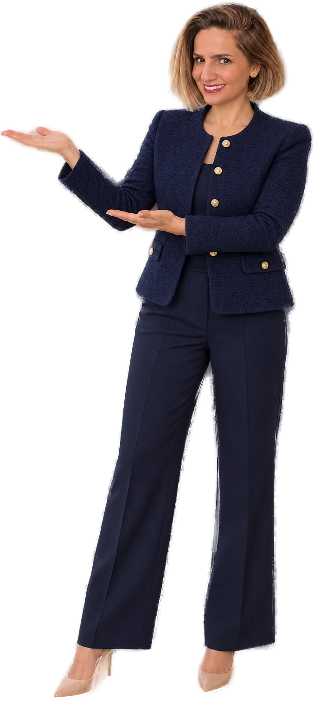

Kariyerimin büyük bölümünü kurumların içinde, eğitmen ve Eğitim ve Gelişim yöneticisi olarak geçirdim. Bugün ise danışmanlık tarafında, kurumsal müşteriler için programlar tasarlayan ve hayata geçiren bir çözüm ortağıyım.
Bu iki bakış açısı, bir kurumun ihtiyacını içeriden anlamamı, ona gerçekten uyan bir çözüm kurgulamamı ve bunu sahada uygulamamı sağlıyor. Deneyimsel öğrenme, vaka çalışmaları ve yapay zekâ destekli uygulamalarla öğrenilenin işe taşınmasına odaklanıyorum; koçluk ve mentorlukla da gelişimi kalıcı hale getiriyorum.
Çalışma yaklaşımım
Gerçek ihtiyacı, iş hedefleri ve ekiplerin bugünkü durumu üzerinden netleştiririm.
Kurumun kültürüne uygun; webinar, atölye ya da aylara yayılan gelişim yolculukları kurgularım.
Deneyimsel öğrenme, vaka çalışmaları ve facilitasyonla öğrenmeyi sınıftan sahaya taşırım.
Davranıştaki değişimi ve iş sonuçlarına etkisini ölçer, programı buna göre geliştiririm.
Neler yapıyorum
Çalıştığım sektörler
Kariyer yolculuğu
Sigortadan sağlığa, telekomdan danışmanlığa uzanan bu yolculuk, her sektörün öğrenme ihtiyacını kendi dilinde anlamamı sağladı.
Kariyerime Aksigorta’da Eğitim ve Gelişim Uzmanı olarak başladım ve sigorta sektöründe eğitim süreçlerinin içinde yetiştim.
Medical Park Hastaneler Grubu’nda sağlık sektörünün öğrenme ihtiyaçlarına yönelik eğitim çalışmalarında yer aldım.
Turkcell Global Bilgi’de Eğitim ve Gelişim Birim Müdürü olarak birimi yaklaşık 13 yıl boyunca yönettim.
UNIQ Training & Consulting’te Eğitim ve Gelişim Direktörü olarak kurumlara çözüm ortaklığı yapıyorum.
İletişim
